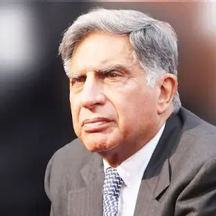

Ratan Tata was the son of Naval Tata, who was adopted by Ratanji Tata, son of Jamshedji Tata, the founder of the Tata Group. He graduated from Cornell University College of Architecture with a bachelor's degree in architecture. He had also attended the Harvard Business School (HBS) Advanced Management program in 1975. He joined the Tata Group in 1962, starting on the shop floor of Tata Steel. He later succeeded J. R. D. Tata as chairman of Tata Sons upon the latter's retirement in 1991. During his tenure, the Tata Group acquired Tetley, Jaguar Land Rover, and Corus, in an attempt to turn Tata from a largely India-centric group into a global business.
